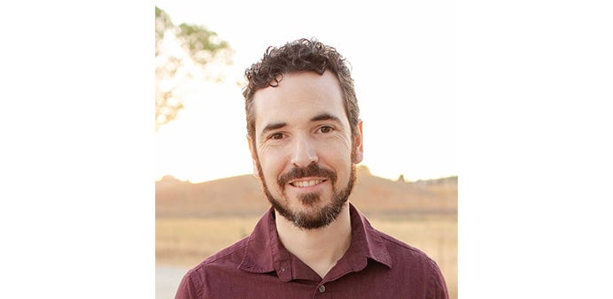

We spoke with longtime CivicActioner Kristian Ducharme, Associate Director of Drupal Engineering, about his work as a tech lead for the National Science Foundation (NSF) Modernization project, the power of Drupal in transforming digital government services, and why he loves CivicActions.
What is the most rewarding part of your job?
I’m currently a Technical Lead for the National Science Foundation (NSF) Modernization project. The most rewarding part of my job is being able to work with such a talented team across all practice areas and transforming great ideas into actionable work, then seeing it being available to benefit the public. I’ve been lucky enough to work on several projects at CivicActions that have visibility and a great impact on millions of Americans, changing the impressions of internet government services of the past.
What excites you most about working with Drupal?
Drupal has given us a solid, community-driven framework to expand upon, bringing considerations around accessibility, mobile device design, and the ability to interface with so many other existing services and data sources. In our government work, we rely heavily on the ability to migrate from a variety of legacy data systems — without Drupal, we would consume much more time creating tools and scripting instead of focusing on how to architect the way forward and improving use of the data.
How long have you been working at CivicActions? What do you find unique about the company culture?
I’ve been working at CivicActions since October 2014 and now we’ve tripled in size since then. There really are elements to the CivicActions culture that I have not seen anywhere else — the value of work/life balance, company transparency, being aspirational with transformative goals of changing government, and being part of a workforce that has incredible talent/diversity/just great people that you would find yourself wanting to hang out with even if you didn’t work together.
Learn more about CivicActions’ past work with the National Science Foundation (NSF) here.